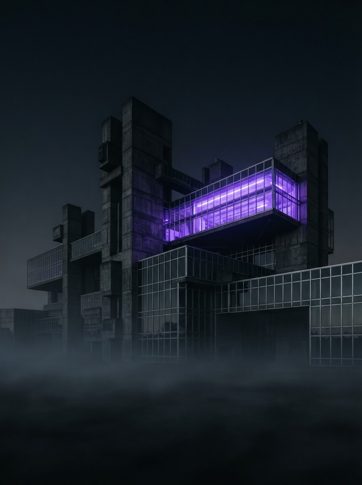

SIL-01
Semiconductor
Silicon Lattice
Etched microstructures that translate thermal gradients into readable electrical signal.
SubstrateSi ⟨100⟩
Resolution0.4 µm
Sensitivity18 µV/K
Material research / Art foundation
A foundation bridging sensor research and artistic practice — making the invisible signals of matter tangible, collectible, and humane.
02 / The Archive of Matter
Each specimen is a sensor technology rendered as a fine-art object. Scroll laterally to enter the archive.
SIL-01
Semiconductor
Etched microstructures that translate thermal gradients into readable electrical signal.

CRY-02
Mineralogy
Self-organising crystal branches that map acoustic vibration into visible form.

GLS-03
Optics
Smart-glass composites splitting a single beam into a calibrated spectral signature.

CRB-04
Structural
Micro-filament weave sensing strain and torsion across architectural surfaces.
03 / The Collaboratory
Our residencies pair a scientist and an artist around one material. Drag the divider to watch raw data resolve into work.
04 / Dispatch
Installation news from our collaborators, and reading on materials research and human-centered communities.
Live
Public posting and moderated comments are in preparation; there is no public submission form. Updates are published by the lab.
Installation dispatch
05 / Reading Room
Peer-reviewed work from international institutions, indexed for the Open Matter archive.
A diffusion model that proposes millions of novel stable crystal structures, vastly expanding the catalogue of synthesizable inorganic materials.
DeepMind's GNoME model predicts 2.2 million new crystals, including 380,000 stable materials poised for experimental synthesis.
A message-passing neural network that achieves chemically accurate interatomic potentials across the periodic table at low computational cost.
An LLM that reasons over crystal structures, predicting properties and proposing synthesis routes from natural-language queries.
A new ab-initio framework for how electrons reshape lattice vibrations — relevant to phonon densities of states in oxide lattices.
Epitaxial strain toggles the electronic phase of a correlated oxide — a model for tunable quantum-material substrates.
06 / Convergence
Artists and institutions experimenting with media, metals, and materials — the collaborative community Open Matter is built for.
Ice, light, chromatic perception
Glacial ice casts and spectral installations that make material change visible to the body.
Studio Olafur Eliasson · Berlin
Aerospace fabrics, spider silk
Lighter-than-air sculptures and woven spider-web architectures that listen to nonhuman matter.
Studio Tomás Saraceno · Berlin
3D-printed chitin, material ecology
Computational design that grows biological materials — chitin, cellulose — into structural form.
Mediated Matter · MIT
Material art from China
Decades of artists transforming everyday matter — plastic, ash, hair — into large-scale work.
Smart Museum · University of Chicago
Architecture & design experimentation
Design practices that mobilize, confound, and generate natures through matter.
Craft Contemporary · Los Angeles
Materials research as visual art
An annual exhibition bridging graduate materials research and sculptural output.
Stanford Materials Research Society
07 / The Work Ledger
Every contribution is routed to a live deployment in the field. Transparency is the substrate of our work.
100% ROUTED TO FIELD RESEARCH · PUBLIC-BENEFIT WORK · OPEN RESULTS